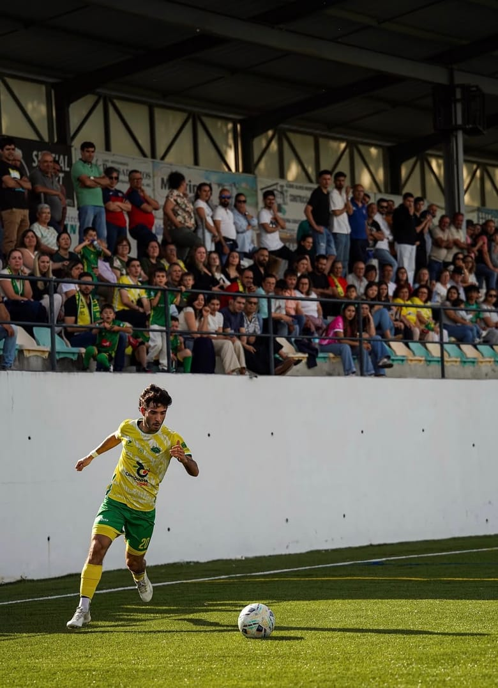
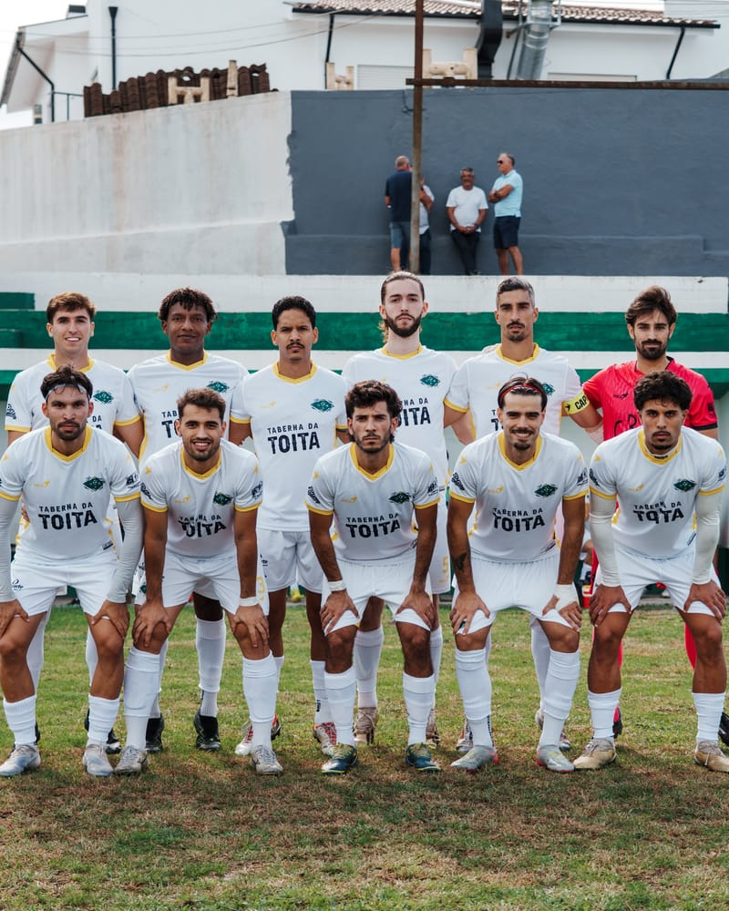
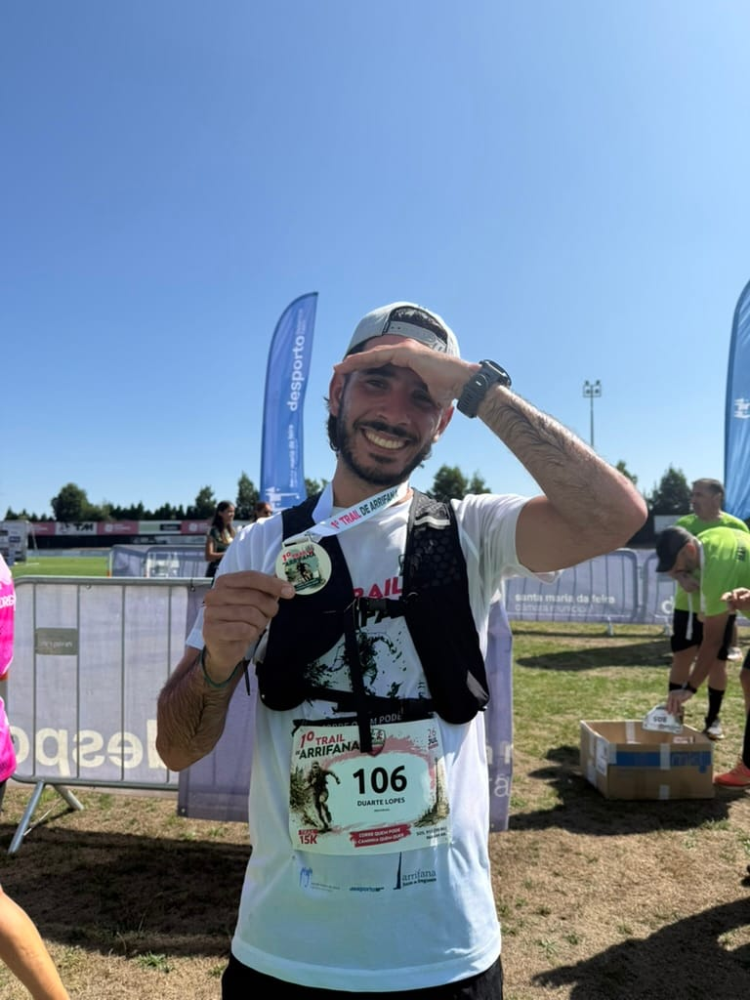

Right-back on the pitch, data scientist everywhere else.
Data scientist with a Bioengineering background (FEUP) and three years building forecasting and applied machine learning systems. I like problems that run from raw data to something people use, and I like them most when they involve sport. Away from the keyboard it is trails, cycling, padel and tennis.

Born to play football, built to understand it with data.
Football is where I test ideas first. Two public projects, both built around my own matches and seasons.

-
Match video analysis
Python, YOLO detection, pitch homography, expected goals
Takes a full match filmed from a single camera and turns it into team and player statistics, expected goals, set pieces and a timeline of key moments with highlight clips. It detects and tracks the players and the ball, maps them onto the pitch, then applies a written rulebook for every statistic.
-
Season forecasts and GPS load
Python, Streamlit, Monte Carlo simulation
Scrapes fixtures and results, builds the league table and simulates the remaining games to forecast the final standings. A second part analyses GPS data from training and matches: sprints, load and how much sprinting is left in the second half. Both parts have dashboards.

Off the pitch, I run.
10K road races and trail races, logged on Strava. More of both to come.